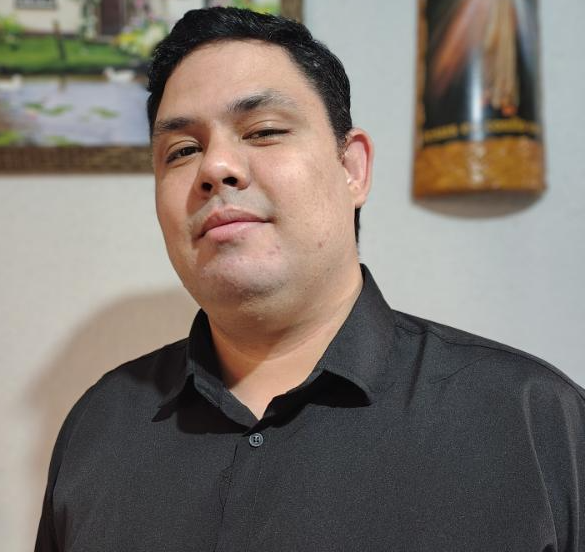

Desenvolvedor Python focado em automação de processos e engenharia de dados. Utilizo 10 anos de experiência operacional para transformar fluxos manuais complexos em sistemas eficientes e escaláveis.
Solução real de automação comercial. Reduzi processos de fechamento de caixa de 20 min para 30 segundos, processando planilhas PDV e gerando relatórios formatados.
GitHub →Aplicação completa utilizando o padrão MVT. Implementação de persistência de dados, autenticação e gerenciamento de registros em banco de dados relacional.
GitHub →Evolução do MVP para a nuvem. Arquitetura escalável com integração de API de WhatsApp, banco de dados relacional e containers.
Monitor de preços com pipeline ETL completo. Integra FastAPI com n8n para alertas automáticos e dashboard em Streamlit.
GitHub →
Sou estudante de Ciência da Computação e atualmente Gerente de Plantão no McDonald's (há 10 anos).
Gerenciar operações de alto volume me ensinou a ter foco absoluto em resultados e a construir sistemas que não falham sob pressão. Trago essa mentalidade "pé no chão" para o desenvolvimento de software.
Meu objetivo é consolidar minha transição para o backend, criando automações que gerem valor real para empresas e usuários.